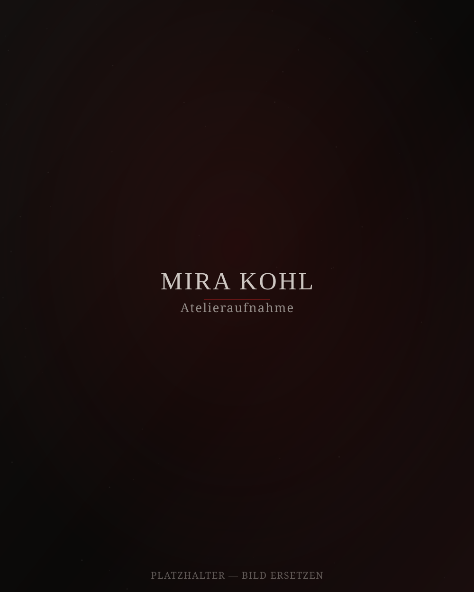

Über mich
Mira Kohl
Ich arbeite an der Grenze zwischen Licht und Schatten — mit Öl, Tusche und zunehmend auch digitalen Mitteln. Meine Bilder entstehen selten aus einer Idee, sondern aus einer Stimmung, die ich so lange bearbeite, bis sie Form annimmt.
Nach meinem Studium der freien Kunst habe ich mehrere Jahre in einem alten Fabrikatelier gearbeitet, bevor ich mein eigenes Studio bezogen habe. Wiederkehrende Themen sind Vergänglichkeit, Erinnerung und die leise Kraft von Details, die man erst beim zweiten Hinsehen bemerkt.
Ich zeige regelmäßig in kleineren Galerien und arbeite an Auftragsarbeiten für private wie institutionelle Sammlungen.
„Roter Faden" — Einzelausstellung
Galerie Nordlicht, Kuratierte Einzelschau neuer Mischtechnik-Arbeiten.
„Schattenräume" — Gruppenausstellung
Kunstverein Alte Mühle, gemeinsam mit vier weiteren zeitgenössischen Malerinnen.
Artist Residency
Dreimonatiger Atelieraufenthalt mit Fokus auf großformatige Ölmalerei.
Abschluss, freie Kunst
Diplom mit Auszeichnung, Abschlussausstellung „Erste Schichten".